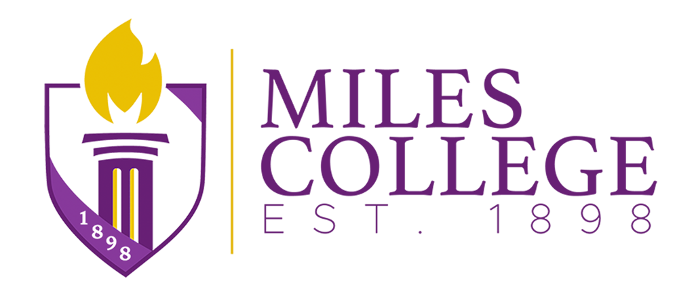

LioraAI · AI transcript evaluation software for higher education


 Nashville State: 15 min → 2 min per transcriptRoane State: 3 weeks → 2 days to evaluate
Nashville State: 15 min → 2 min per transcriptRoane State: 3 weeks → 2 days to evaluate
From Transcripts to Credit Decisions. In Minutes, Not Days.
LioraAI helps admissions and registrar teams evaluate transfer and high school transcripts, apply your institution’s rules and speed up enrollment decisions, with AI doing the work and your staff approving every decision.

Transcript evaluated15 credits ready to post to Banner
High school GPA standardized100-point scale → 3.70 on your rules
Faculty review1 course flagged for a decision
What is LioraAI?
LioraAI is EnlitEDU’s AI transcript evaluation software for U.S. colleges and universities. LioraAI Transfer Credit Intelligence automates transfer credit evaluation and LioraAI Freshman Intelligence automates high school transcript review, both against each institution’s own rules, with staff approving every decision. Further modules cover military and prior-learning credit and transfer analytics.
Trusted by enrollment teams across the U.S.


Start with what’s proven
Two Products That Move Credit Faster
Most institutions start with transfer and high school transcripts, where the backlog is biggest. Both run on one engine with your rules and your approval.


How LioraAI works
From Transcript to Decision, Without the Manual Work
The same flow for transfer and high school transcripts: LioraAI reads the record, applies your rules and hands your team a documented recommendation to approve, then posts the credit to your SIS.
Ingest
PDF, scanned paper, EDI and PESC XML transcripts from any institution
Extract
Courses, grades, credits and terms pulled into a clean record
Match
Each course matched to your catalog using your rules and history
Review
Evaluators approve, edit or send exceptions to faculty
Post
Approved credit written back to your SIS
Explainable by design
A Live Workflow, Not a Black Box
Every suggestion shows its evidence: the matched course descriptions, the rule that applied and your past decisions on the same course. Anything uncertain goes to a person.
- Your evaluators approve, edit or override every recommendation
- Confidence levels send edge cases to the right reviewer
- Student records never train general-purpose AI models
| Incoming course | Your equivalent | Status | |
|---|---|---|---|
| BIOL 240 · A− | → | BIO 201 | Matched |
| MATH 251 · B+ | → | MTH 280 | Matched |
| ENGL 102 · A | → | ENG 111 | Matched |
| CS 161 · A | → | CSCI 150 | Matched |
| ART 205 · B | → | - | Review |
4 courses matched · 15 credits ready to postReady for review
Proof, not promises
Built Only for Higher Ed Credit
LioraAI does one thing: turn academic records into fast, fair, documented credit decisions.
1M+course descriptions in LioraAI’s mapping corpusEnlitEDU
<60sor less to evaluate a full transcriptEnlitEDU product measurement
90%faster transcript evaluation at Roane State Community CollegeReported by Roane State
18 daysfrom kickoff to live on Ellucian BannerRoane State implementation
87%less time per transcript at Nashville State (15 min to 2 min)LioraAI platform data, Sept 2026
130+countries’ transcripts supported, with grading normalizedEnlitEDU
Institution-specific figures were reported by those institutions. Results vary with your current process, transcript volume and SIS configuration; we model your own numbers in the demo.
In their own words
Hear it from the people who run the office
Registrars, VPs and IT leads at Tennessee community colleges talk about what changed after LioraAI went live.
For state systems and multi-campus institutions
Proven at Tennessee Community Colleges. Built for Systems.
Roane State Community College and Nashville State Community College, two Tennessee community colleges, run LioraAI on their own catalogs and rules. The same engine scales across every campus in a system: shared transfer policy where you want consistency, campus decisions where you need them.
- Roane State: live on Ellucian Banner in 18 days; evaluation from three weeks to two days
- Nashville State: full institutional go-live in July 2026; 2,158+ transcripts processed by September
Shared rules, local decisions
System-wide transfer policy, common course numbering and pathways apply everywhere, while each campus keeps its own equivalencies and approvals.
The same course, the same answer
One rules engine means a course from a partner college is evaluated the same way at every campus in the system.
Each campus runs its own team
Institutions manage their own roles and reviewers. Nashville State administrators create their own LioraAI roles with no EnlitEDU configuration step.
One system-wide view
Decisions, turnaround and credit applied roll up across campuses for the system office.

3 wks → 2 daysEvaluation turnaround at Roane State
Why it matters
Students Move. Their Credit Should Too.
More than a third of students transfer. Veterans bring years of training. Adult learners bring certifications and work experience. Every one of them asks the same question: what counts? The institution that answers first, and fairly, earns the enrollment.
37%
of first-time college students transferred at least once within six years
Source: National Student Clearinghouse, Transfer & Mobility (2015)43%
of credits were lost, on average, by students who transferred
Source: U.S. Government Accountability Office, GAO-17-574 (2017)3-8 weeks
is a typical manual turnaround for one transfer evaluation
Source: Registrar offices EnlitEDU works withSolutions by outcome
One Platform for Every Credit Decision
Start with the result you’re accountable for. LioraAI’s modules share one engine, one set of your rules and one audit trail.

Queue cleared212 evaluations this week
Clear the Transcript Backlog Without Adding Staff
Every week a transcript sits in the queue is a week a student spends deciding whether to enroll somewhere else. LioraAI moves your evaluators from research to review, so decisions go out in days.
- Batch processing for peak periods
- Confidence levels so reviewers focus on exceptions
- One review queue for every credit type
Modules that do the work
See how
15 min → 2 minPer transcript at Nashville State
Win the Transfer Students Who Are Shopping for Credit
“Will my credits transfer?” is the question that decides where a transfer student enrolls. The institution that answers it first, and accurately, wins the student.
- Pre-application credit estimates from your real rules
- Faster official evaluations for admitted students
- Feeder-school and pathway analytics
Modules that do the work
See how
12 credits awardedJST evaluated with ACE citations
Turn Service and Work Experience Into Credit, Fast
Veterans and adult learners bring years of training and experience. They also bring a deadline: benefits that run out, jobs to keep and families to support. LioraAI gets them a documented credit answer in days.
- ACE citations on every military recommendation
- SCO review queue with audit trail
- Faculty-approved CPL awards
Modules that do the work
See how
Decision recordedEvidence, rule and approver logged
Consistent, Documented, Defensible Credit Decisions
When the same course earns different credit depending on who evaluated it, students notice, auditors notice and appeals pile up. LioraAI applies one set of rules and keeps the evidence for every decision.
- Immutable audit trail on every decision
- Versioned rules with effective dates
- Role-based access and approvals
Modules that do the work
See how
Credit appliedBefore the first advising session
Keep Students on Track From Their First Term
Students stay when they know their credit counted. LioraAI gives advisors and registrars a fast, credit-accurate evaluation and transfer analytics, so the right outreach happens early.
- Transfer credit applied before the first advising session
- Shared advisor and registrar view of transfer credit
- Prioritized weekly outreach lists
Modules that do the work
See howThe LioraAI platform
Expand Across the Student Journey
Once transfer and high school transcripts run on LioraAI, the same engine, rules and audit trail extend to military credit, prior learning and transfer analytics.


Which module do I need?
Plain definitions, because community colleges and universities don’t always use the same words.
Students coming to college for the first time from high school, homeschool or a GED (first-year / freshman)LioraAI Freshman Intelligence →
Anyone bringing credit from another college or university, whatever their class standingLioraAI Transfer Credit Intelligence →
Service members and veterans with a JST, CCAF transcript or DD-214Veterans & JST →
Adult learners with certifications, work experience, exams or a portfolioPrior Learning Assessment →
Who we serve
The Same Engine, Your Vocabulary
Community colleges and universities don’t use the same words for the same students. LioraAI follows yours.


Wherever your campus is
Built for Colleges Across the U.S.
LioraAI works with any state’s rules and any major student information system, so the same evaluation engine serves a community college in one state and a university system in another.
Integrations
Works With the Systems You Already Run
Approved decisions post to your SIS through API or secure SFTP. No re-keying, no new system of record.
All integrationsCommon App
DegreeWorks
uAchieve
PESC XML & EDI
SFTP
ACE / JST
FAQ
Questions We Hear Every Week
Straight answers to what registrars, enrollment leaders and IT teams ask us most.
See all FAQsEnlitEDU is a higher education technology company that serves colleges and universities across the United States, headquartered in Cumming, Georgia. It grew out of Anatta IT Solutions’ work supporting colleges through student information system projects, and launched LioraAI in 2025.
First-time students coming from high school: Freshman Intelligence. Anyone bringing credit from another college, at any class level: Transfer Credit Intelligence. Military records: Veterans & JST. Work experience, certifications and portfolios: Prior Learning Assessment. Transfer analytics: Mobility Intelligence.
With colleges and universities across the United States. Demos, implementation and training run online for institutions in any state, and the team is headquartered in Cumming, Georgia, in north metro Atlanta.
No. LioraAI drafts recommendations with the evidence behind them. Your staff and faculty approve, change or decline every decision.
Standard integrations typically take two to four weeks and more complex API setups four to six weeks. Roane State Community College went live on Ellucian Banner in 18 days.
LioraAI is designed to be used in a FERPA-compliant way. EnlitEDU acts as a school official under your direct control, processes records only to deliver the service, and does not re-disclose them except as you direct. A Data Processing Agreement governs every engagement.
Insights
All articles Fresh From the Blog


See what LioraAI does with your transcripts.
Bring a few real transcripts to a 30-minute demo. We’ll run them live against your catalog and rules, and show you the review screen and the SIS write-back.